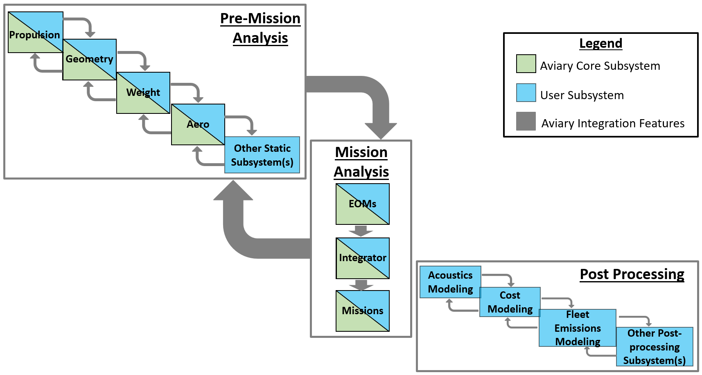
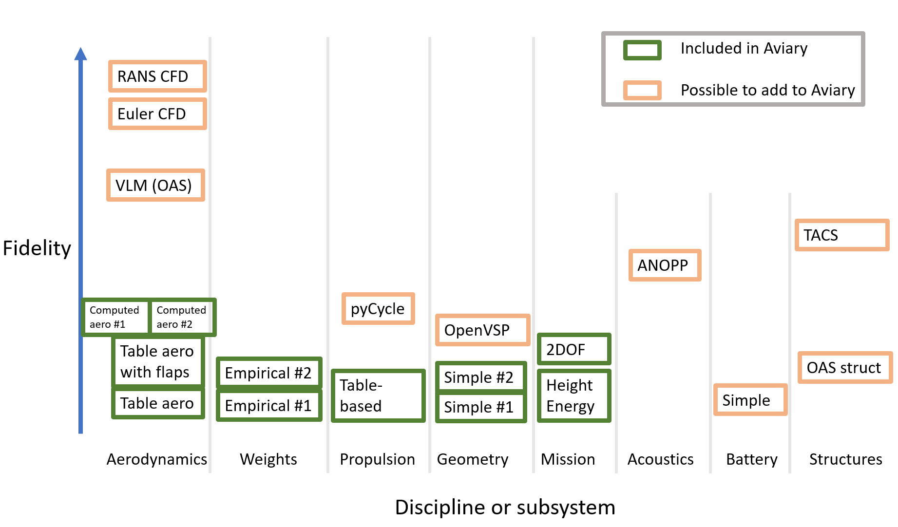

External Subsystems#
Aviary has the ability to include user-defined external subsystems within its mission analysis and optimization processes. This doc page explains what these subsystems are, how to write a builder object that Aviary uses, and details the methods that you need to provide to use external subsystems.
If you are using or developing external subsystems in Aviary, you should absolutely read this doc page!
Note
The external subsystem integration process in Aviary is under active development. Expect some APIs and expectations to change, and we gladly accept any feedback or suggestions.
Breaking down the flow of Aviary systems#
Throughout the process of using external subsystems, we will reference a few of the internal processes that Aviary uses. Specifically, the pre-mission, mission, and post-mission systems within Aviary are important to understand when using external subsystems. You can add OpenMDAO systems (groups or components) to any of the three main systems within Aviary, as shown in the graphic below.

What do we mean by external subsystems?#
In Aviary, a subsystem is simply an openMDAO component or group that is self-contained, and therefore modular. Subsystems typically capture physics related to a traditional discipline (such as aerodynamics or propulsion) but are not restricted to particular topics. Aviary comes with the following discipline analysis, referred to as “core subsystems”:
geometry
mass
aerodynamics (table-based or empirically computed)
propulsion (table-based)
flight dynamics / equations of motion (energy-state or 2DOF)
Aviary allows for integration with arbitrary subsystems beyond the included low-fidelity subsystems. These could be disciplinary models to do with batteries, structural models, acoustics, or anything to do with aircraft. The user can provide builder objects for these new subsystems and Aviary will loop through them to add to the model. Aviary handles the integration for these systems across the aircraft’s trajectory so we can track state variables and aircraft performance.
Core subsystems and external subsystems are created using the same code infrastructure: the SubsystemBuilder object. This makes swapping out a core Aviary subsystem with an external one relatively straightforward, as they share the same interface.
Some examples of disciplines that would fall under the “external subsystem” category include:
acoustics
battery modeling
motor modeling
structural analyses
thermal management systems
sensor packages
and many more!
More detailed instructions on creating an external subsystem and integrating it into Aviary can be found here. Wrapping external models in OpenMDAO and creating builders for them can be challenging. To help alleviate this burden on users, the Aviary team is continually developing and sharing external subsystems in the aviary/models/external_subsystems folder.
Clarifying subsystems in Aviary and their fidelity levels#
Next, we want to graphically show a notional breakdown of subsystems in Aviary and potential subsystems that can be added by users. Lower fidelity analyses are at the bottom of this figure with higher fidelity analyses at the top. Subsystems contained in green boxes are those provided in core Aviary and subsystems in light orange are ones that users can define subsystems for and integrate within Aviary. Any of the subsystems in light orange are not developed by NASA; instead they’d be developed by users of Aviary. All hooks and capabilities needed by users for these subsystems would need to be added by the users.
This graphic is notional and is not meant to be exhaustive or exact. Specifically, any arbitrary disciplinary subsystem can be added to Aviary; it is not limited to those shown here. Additionally, there are many more types of analyses that could be included on this graph, at all sorts of different fidelity levels.
